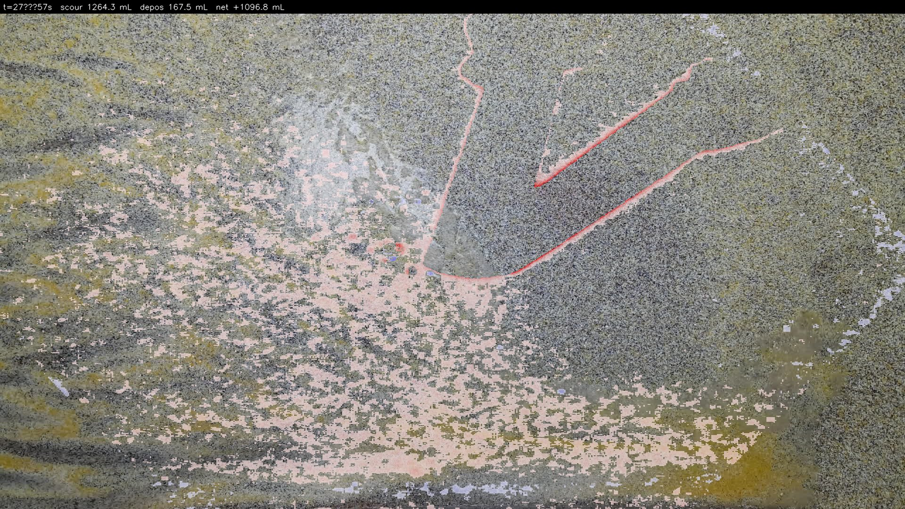
t = 27.4 → 57.4 s · net +1096.8 mL · max scour +57 mm
Each interval compares Kinect depth at t0 and t1. Positive Δ-depth = bed lowered (scour). Negative Δ-depth = bed raised (deposition). Pixels outside the 700–850 mm bed range (cross-bar, hands, tools) are excluded. Pixel area scales with local depth; volumes are sums of per-pixel Δ·area.
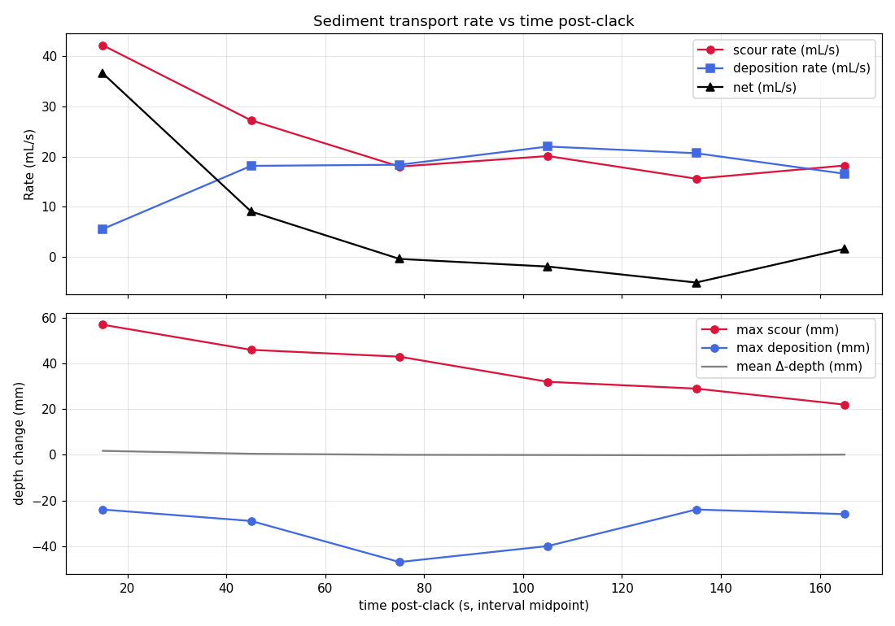
| t₀ (s) | t₁ (s) | scour (mL) | depos (mL) | net (mL) | net rate (mL/s) | max scour (mm) | max depos (mm) |
|---|---|---|---|---|---|---|---|
| 27.4 | 57.4 | 1264.33 | 167.52 | +1096.82 | +36.561 | +57.0 | -24.0 |
| 57.4 | 87.4 | 816.11 | 544.31 | +271.79 | +9.060 | +46.0 | -29.0 |
| 87.4 | 117.4 | 540.08 | 551.17 | -11.09 | -0.370 | +43.0 | -47.0 |
| 117.4 | 147.4 | 602.98 | 659.64 | -56.67 | -1.889 | +32.0 | -40.0 |
| 147.4 | 177.4 | 467.75 | 619.87 | -152.12 | -5.071 | +29.0 | -24.0 |
| 177.4 | 207.4 | 546.35 | 497.38 | +48.97 | +1.632 | +22.0 | -26.0 |

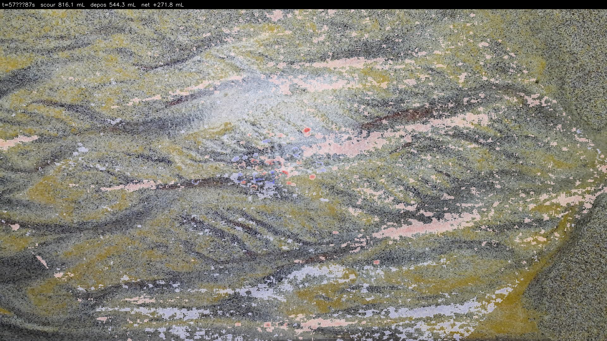
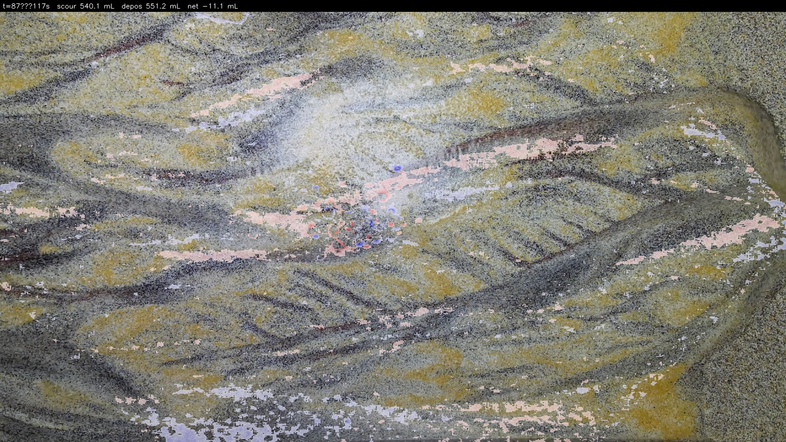
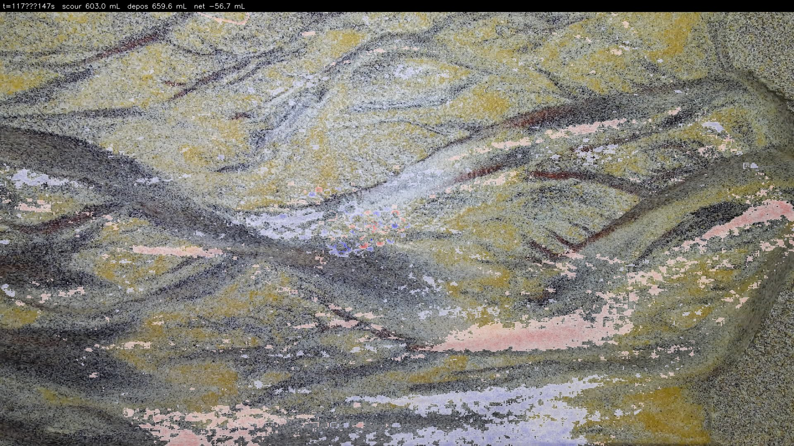
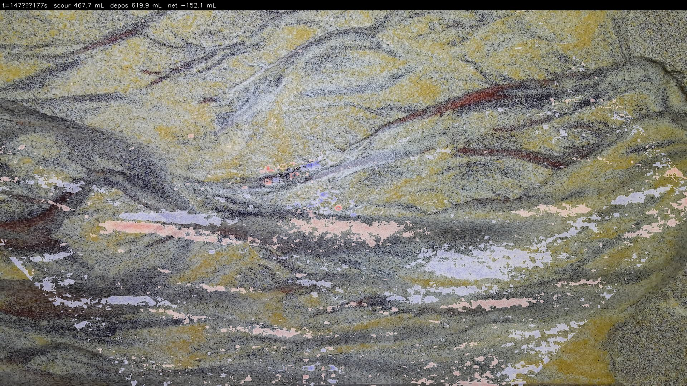
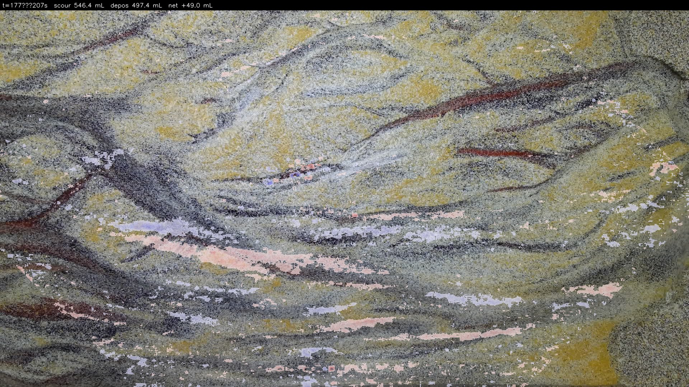
Absolute distance from the Kinect to the bed at each frame, colorised with the Turbo colormap. Red = bed is closer to Kinect (higher elevation / raised sediment). Blue = bed is farther from Kinect (lower elevation / scour holes). Grey = outside the 700-850 mm bed depth range.
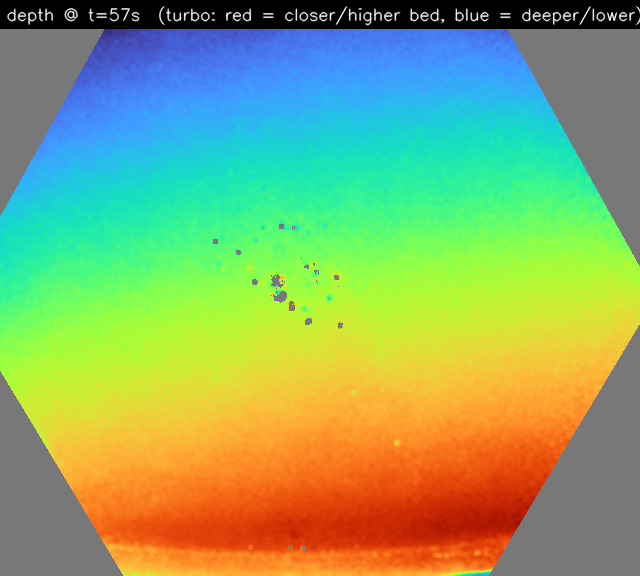
depth @ t = 57 s
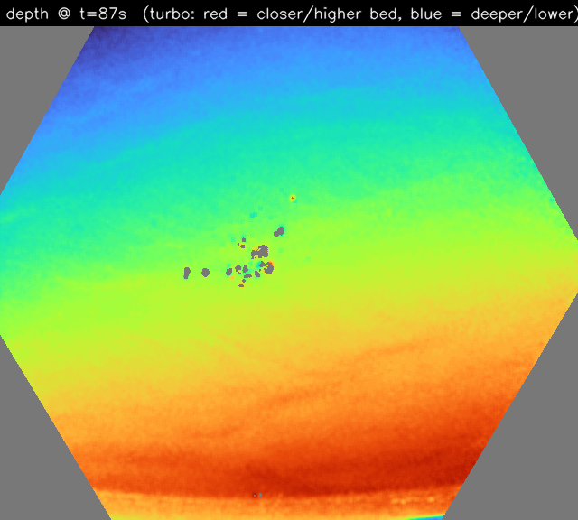
depth @ t = 87 s
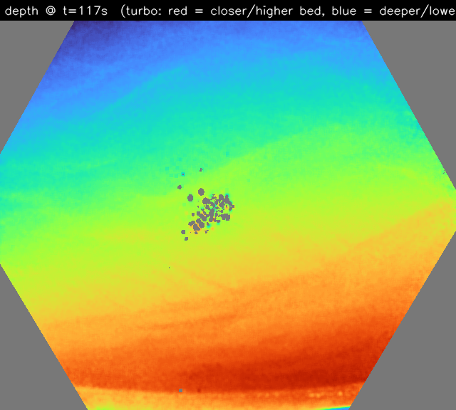
depth @ t = 117 s
depth @ t = 147 s
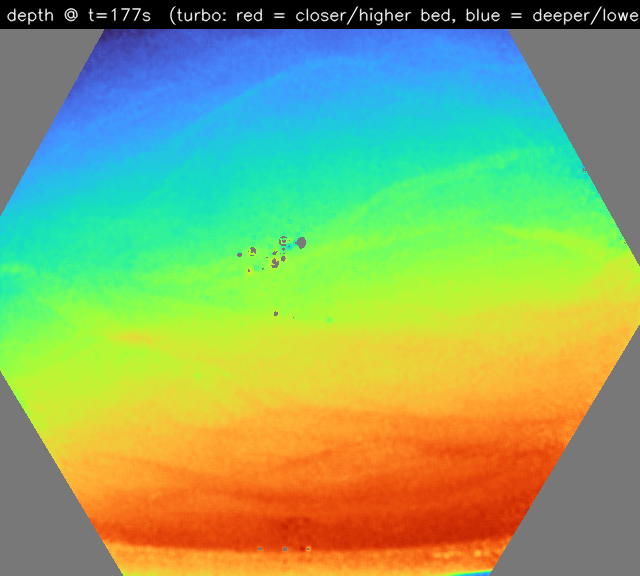
depth @ t = 177 s
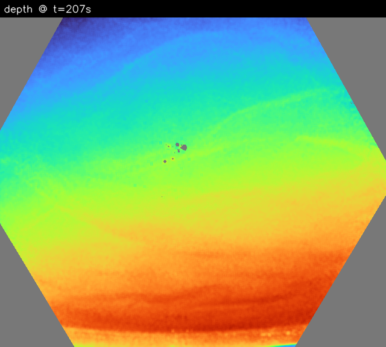
depth @ t = 207 s
Turbo-colored bed topography at t₁, with change overlay where |Δ| > 3 mm. Shows both the current shape of the bed AND what changed during this interval — read the background color for topography, the red/blue mottling for dynamics.
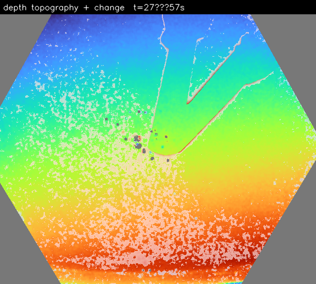
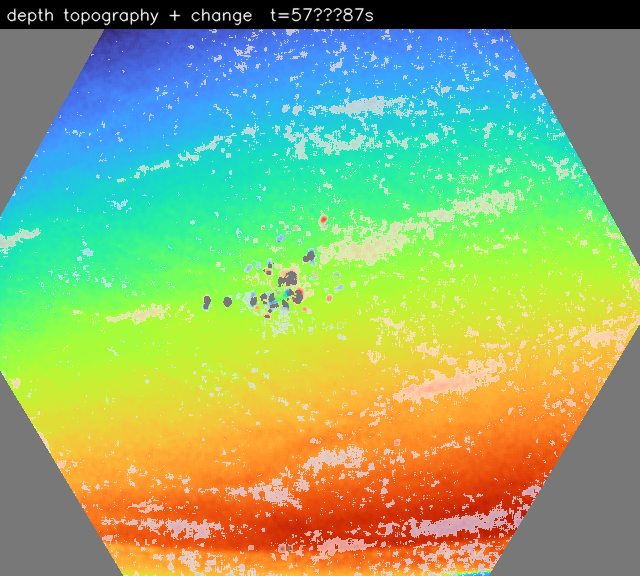
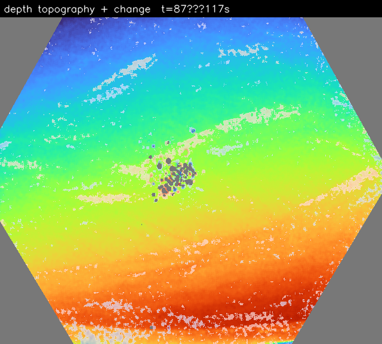
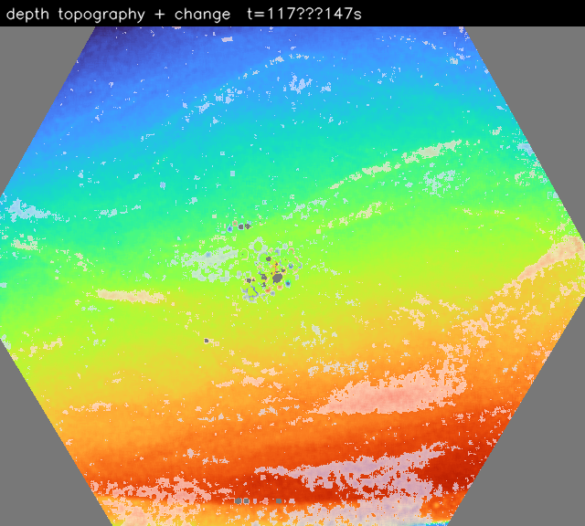
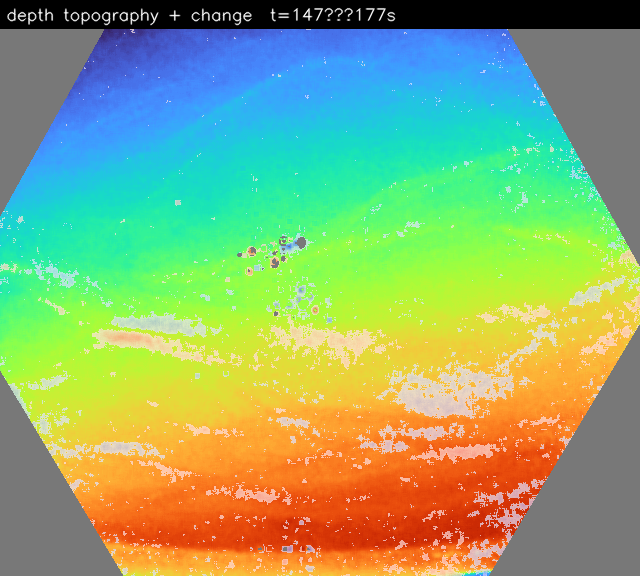
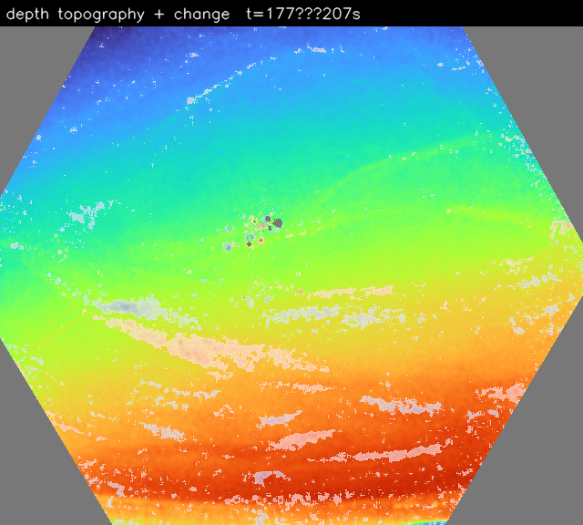
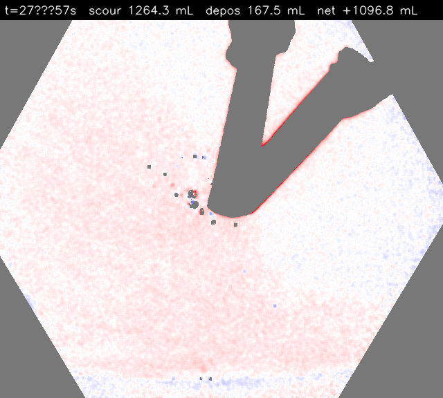
t = 27.4 → 57.4 s · net +1096.8 mL
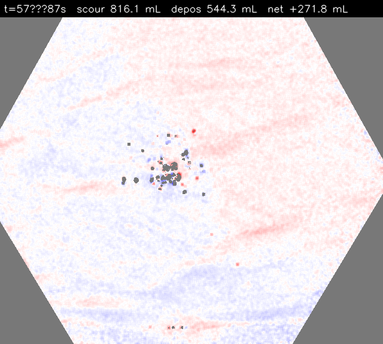
t = 57.4 → 87.4 s · net +271.8 mL
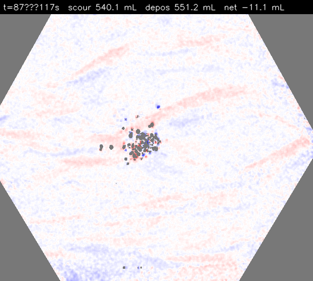
t = 87.4 → 117.4 s · net -11.1 mL
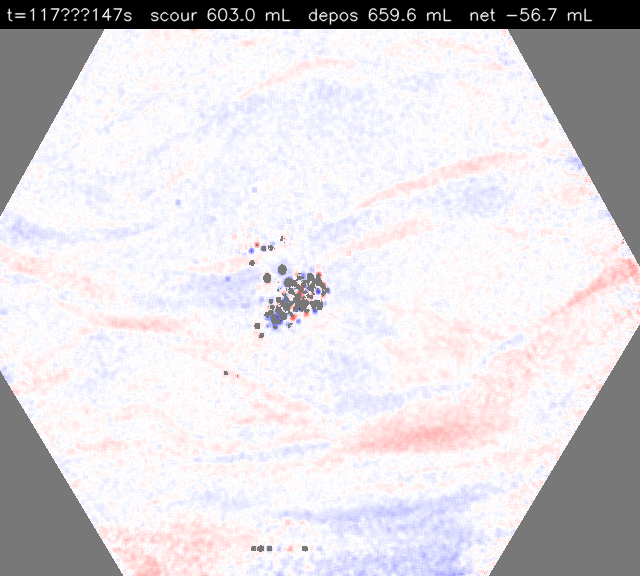
t = 117.4 → 147.4 s · net -56.7 mL
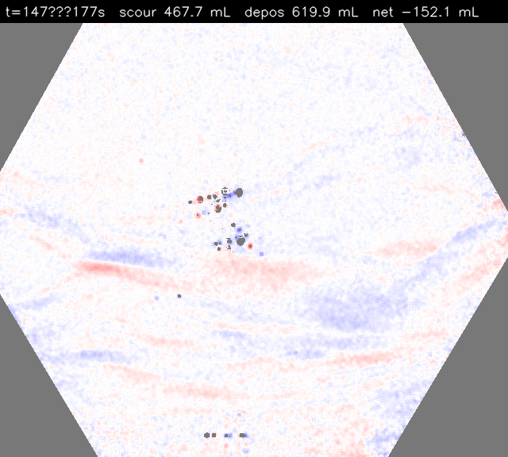
t = 147.4 → 177.4 s · net -152.1 mL
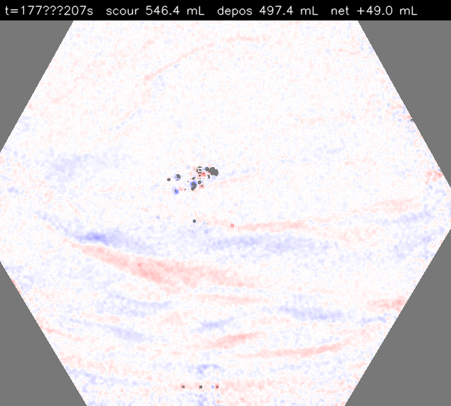
t = 177.4 → 207.4 s · net +49.0 mL
All images are masked to the sediment bed (700-850 mm depth from Kinect). The cross-bar and transient hands/objects are filtered out by depth range.